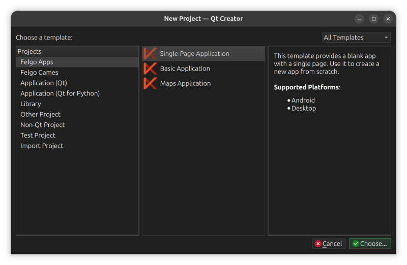
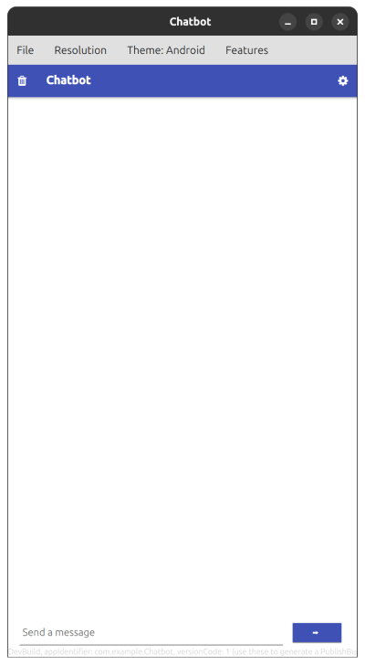
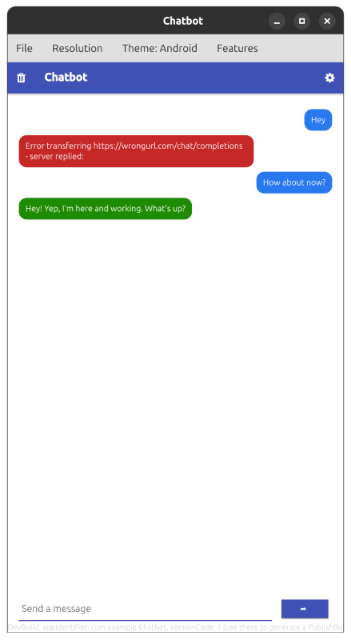
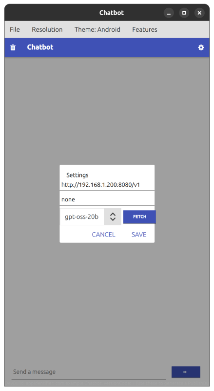
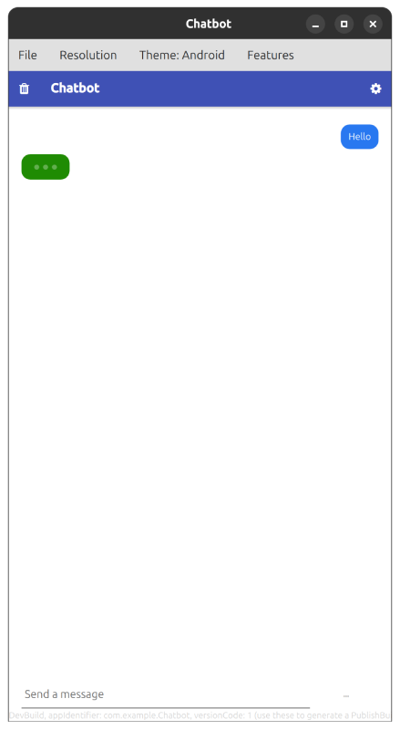

This demo shows how to build a chatgpt like AI chatbot that connects with any OpenAI compatible API and can run on any platform using Felgo and Qt technologies.
The tutorial follows the same order in which the app was built: we start with an empty project, create the UI, store the API configuration, connect to the API and finally add the finishing touches like a typing indicator and persistent chat history. You can follow along step by step, the complete source is also available in this repository.
The finished app talks to any OpenAI compatible API. That includes the OpenAI platform itself, but also local servers like LM Studio, Ollama or llama.cpp, which all expose the same /v1/chat/completions and /v1/models endpoints. This makes the app a nice client for locally running models.
The app consists of five QML files, each with a single responsibility:
Main.qml - the app shell, the chat logic and the chat persistence.ChatApi.qml - everything related to the HTTP calls, without any UI.ChatView.qml - a reusable list of chat bubbles.InputBar.qml - the message input row with the send button.SettingsDialog.qml - the API configuration dialog with a model dropdown.Splitting the app this way keeps each file easy to read: the UI components (ChatView, InputBar, SettingsDialog) do not know anything about the API, and ChatApi does not know anything about the UI. Main.qml connects the pieces.
Download the felgo SDK and create a new Single Page Application from the new project dialog.

This will create a simple demo project with everything needed to build the app for required platforms up and running.
The App type is the root item of every Felgo app. Inside it we use a NavigationStack with a single AppPage, which gives us a header with a title and space for action buttons.
We add two actions to the header: a cog icon that opens the settings dialog and a trash icon that clears the conversation. Below the page we place a ChatView (covered in the next section) and the InputBar with the text field and the send button, anchored to the bottom of the screen.
NavigationStack {
AppPage {
title: qsTr("Chatbot")
rightBarItem: IconButtonBarItem {
iconType: IconType.cog
title: "Settings"
onClicked: settingsDialog.open()
}
leftBarItem: IconButtonBarItem {
iconType: IconType.trash
title: "Clear chat"
onClicked: clearDialog.open()
}
SettingsDialog {
id: settingsDialog
settingsStore: app.settings
}
ChatView {
id: chatView
anchors {
top: parent.top
left: parent.left
right: parent.right
bottom: messageInput.top
margins: dp(20)
}
messages: chatMessages
}
InputBar {
id: messageInput
anchors {
left: parent.left
right: parent.right
bottom: parent.bottom
margins: dp(20)
}
busy: app.busy
onSendRequested: message => sendMessage(message)
}
}
}
The InputBar only collects the user input and reports it with its sendRequested signal. The busy property disables the input while the app waits for an API response, so the user cannot send a second message while the first one is still pending. The component itself looks like this:
Row {
id: root
property bool busy: false
signal sendRequested(string message)
spacing: dp(8)
height: dp(45)
function submit() {
sendRequested(inputMessage.text.trim())
inputMessage.text = ""
}
AppTextField {
id: inputMessage
placeholderText: "Send a message"
width: root.width - sendButton.width - root.spacing
height: dp(45)
enabled: !root.busy
onAccepted: root.submit()
}
AppButton {
id: sendButton
width: dp(100)
height: dp(45)
text: root.busy ? "..." : "➡️"
enabled: !root.busy
onClicked: root.submit()
}
}

The chat itself lives in ChatView.qml, a plain Item that receives the message model as a required property. Inside it, an AppListView renders every entry of the model as a chat bubble.
Each message is a ListModel entry with a role and a content field. The roles are:
system - the instruction for the model, never rendered.user - a message from the user, blue bubble on the right.assistant - an answer from the model, green bubble on the left.typing - internal placeholder shown while waiting for the API.error - a failed request, red bubble on the left.delegate: Item {
id: messageDelegate
required property string role
required property string content
width: chatView.width
height: role === "user" || role === "assistant" || role === "error" ? bubble.height
: role === "typing" ? typingBubble.height
: 0
Rectangle {
id: bubble
visible: messageDelegate.role === "user"
|| messageDelegate.role === "assistant"
|| messageDelegate.role === "error"
property bool isMe: messageDelegate.role === "user"
width: Math.min(
messageText.implicitWidth + dp(24),
messageDelegate.width * 0.75)
height: messageText.implicitHeight + dp(20)
radius: dp(14)
color: isMe ? "#2878f0"
: messageDelegate.role === "error" ? "#c62828"
: "#1f8b03"
anchors.right: isMe ? parent.right : undefined
anchors.left: isMe ? undefined : parent.left
AppText {
id: messageText
anchors.fill: parent
anchors.margins: dp(12)
text: messageDelegate.content
color: "white"
wrapMode: Text.Wrap
font.pixelSize: sp(15)
}
}
// ... the typing indicator bubble follows here, see the section below
}
The system message gets a delegate height of 0, so it exists in the model for the API but never appears in the UI. Error bubbles are excluded from the conversation that we send back to the API, which is covered in the section about the request.

The app needs three pieces of configuration: the API base URL, the API key and the model name. We store them with the Storage component, which Felgo provides on every App as app.settings. Values written there survive app restarts.
The dialog exposes its storage keys as readonly properties:
readonly property string apiUrl: "apiUrl" readonly property string apiKey: "apiKey" readonly property string apiModel: "apiModel"
This way Main.qml can read and write the same values without duplicating the key strings: app.settings.getValue(settingsDialog.apiUrl).
The dialog loads the stored values every time it opens and writes them back when the user presses Save. Invalid input (empty fields) is rejected with a red error text below the fields.

Instead of typing a model name manually, the settings dialog can fetch the list of available models from the server. Every OpenAI compatible API exposes a /models endpoint which answers with a list like this:
{
"object": "list",
"data": [
{ "id": "gpt-4o", "object": "model", ... },
{ "id": "gpt-4o-mini", "object": "model", ... }
]
}
A press on the Fetch button next to the dropdown sends a GET request to <baseURL>/models with the same authorization header as the chat requests:
HttpRequest
.get(url + "/models")
.timeout(10000)
.set("Authorization", "Bearer " + key)
.then(res => {
// extract res.body.data[].id
}).catch(err => {
// show error text
})
The fetched ids fill a standard ComboBox from Qt Quick Controls with editable set to true. The editable property is important: if the fetch fails or the server does not implement /models, the user can still type a model name manually and the app keeps working.
Fetching the model list doubles as a connection test: if the request succeeds, we know that the URL and the key are valid.
The fetched list is also cached in the settings store, so the dropdown is filled again after the next app start without a new request.
The HTTP calls live in their own component, ChatApi.qml, which contains no UI at all. Keeping them separate from Main.qml makes both files easier to read and lets you swap the API part without touching the interface.
Sending a message is a single POST request to <baseURL>/chat/completions. The base URL usually ends with /v1, for example https://api.openai.com/v1 or http://localhost:1234/v1 for a local LM Studio server. The app simply appends the endpoint path to whatever URL is configured, so the /v1 part is part of the base URL.
We use Felgo's HttpRequest type, a promise based REST client. The component offers a single request() function that reports the result with an onSuccess or onError callback:
function request(url, apiKey, model, messages, onSuccess, onError) { const chatUrl = url.replace(/\/+$/, "") + "/chat/completions" HttpRequest .post(chatUrl) .timeout(30000) .set("Content-Type", "application/json") .set("Authorization", `Bearer ${apiKey}`) .send({ model: model, messages: messages, temperature: 0.7 }) .then(res => { // validate the answer and call onSuccess }).catch(err => onError(requestErrorMessage(err))) }
The messages array is the complete conversation, built from the ListModel with listModelToArray(). This function filters the model entries: only the roles the API actually understands (system, user, assistant) are sent, and each entry is reduced to exactly the two fields role and content. Without this filter, internal entries like the typing indicator or the error bubbles would end up in the request and the API would reject it with a validation error.
function listModelToArray(model) {
const allowedRoles = [ "system", "user", "assistant" ]
let result = []
for (let i = 0; i < model.count; i++) {
const item = model.get(i)
if (allowedRoles.indexOf(item.role) !== -1)
result.push({ role: item.role, content: item.content })
}
return result
}
The system prompt from the beginning of the conversation is part of every request, so the model keeps its instruction for the whole chat.
In Main.qml, sending a message is then reduced to appending the user message, showing the typing indicator and handing everything over to the API component:
chatApi.request(apiUrl, apiKey, apiModel, chatApi.listModelToArray(chatMessages), answer => { removeTypingIndicator() app.busy = false chatMessages.append({ role: "assistant", content: answer }) chatView.scrollToBottom() saveHistory() }, error => { removeTypingIndicator() app.busy = false chatMessages.append({ role: "error", content: error }) chatView.scrollToBottom() })
While the request is pending, the model is thinking and the user sees a placeholder bubble with three blinking dots. The placeholder is a normal model entry with the internal role typing:
chatMessages.append({ role: "typing", content: "" })
The dots are three small Rectangle items in a Row, animated with a staggered SequentialAnimation on their opacity:
Repeater {
model: 3
Rectangle {
width: dp(8)
height: dp(8)
radius: dp(4)
color: "white"
opacity: 0.3
SequentialAnimation on opacity {
loops: Animation.Infinite
PauseAnimation { duration: index * 200 }
NumberAnimation { from: 0.3; to: 1.0; duration: 250 }
NumberAnimation { from: 1.0; to: 0.3; duration: 250 }
PauseAnimation { duration: 700 }
}
}
}
As soon as the response arrives, the placeholder is removed and replaced with the whole message at once. Since the input is disabled while a request is pending, the typing bubble is always the last entry of the model, which makes removing it trivial:
function removeTypingIndicator() {
const last = chatMessages.get(chatMessages.count - 1)
if (last && last.role === "typing")
chatMessages.remove(chatMessages.count - 1)
}
Errors appear as red bubbles in the chat, so the user always sees what went wrong. The error message is built from the request error: if the server sent a description (for example for an invalid API key), we show it, otherwise we fall back to a generic message. The requestErrorMessage() function also lives in ChatApi.qml, next to the request it describes.
function requestErrorMessage(err) {
const body = err && err.response ? err.response.body : null
if (body && body.error && body.error.message)
return body.error.message
if (err && err.status === 0)
return "Could not reach the server. Check the API URL and your connection."
return err && err.message ? err.message : "Request failed. Please try again."
}
In addition, the response itself is validated before it is used: if the answer does not contain choices[0].message, the user gets an "unexpected response" error instead of a JavaScript exception.

The chat history is stored in the settings store as a JSON string, so the conversation survives an app restart. Saving happens after every new message:
function saveHistory() {
let history = []
for (let i = 0; i < chatMessages.count; i++) {
const item = chatMessages.get(i)
if (item.role === "system" || item.role === "user" || item.role === "assistant")
history.push({ role: item.role, content: item.content })
}
app.settings.setValue(chatHistoryKey, JSON.stringify(history))
}
On startup, the system prompt is added first, then the saved conversation is parsed and appended after it. A corrupted history file simply results in a fresh chat, it never crashes the app.
The trash icon in the header opens a confirmation dialog and clears both the model and the stored history. Note that the system prompt is re-added immediately, so the app is ready for a new conversation right away.
The demo intentionally keeps things small. If you want to take it further, here are some natural next steps:
For a release build you may want to compile the QML files into the binary instead of shipping them as plain text files in the app package. The steps are already prepared as comments in the CMakeLists.txt file:
deploy_resources() call.QML_FILES and RESOURCES in the qt_add_qml_module() call.main.cpp, switch setMainQmlFileName() to "qrc:/qml/Main.qml".This demo contains no secrets in its code: the API key is entered by the user and lives only on their device in the settings store. Never hardcode an API key in the QML sources.